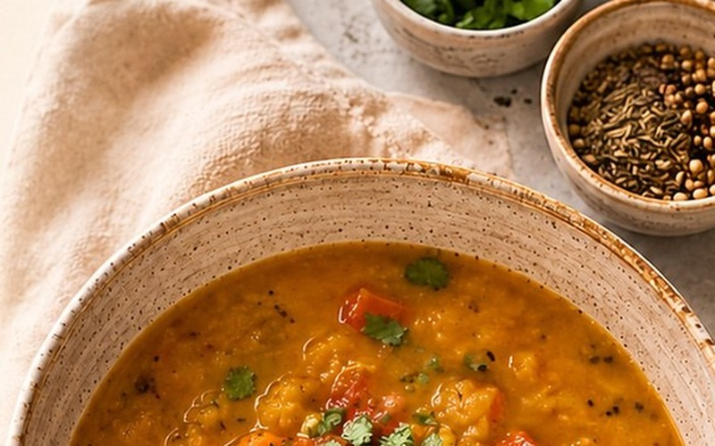
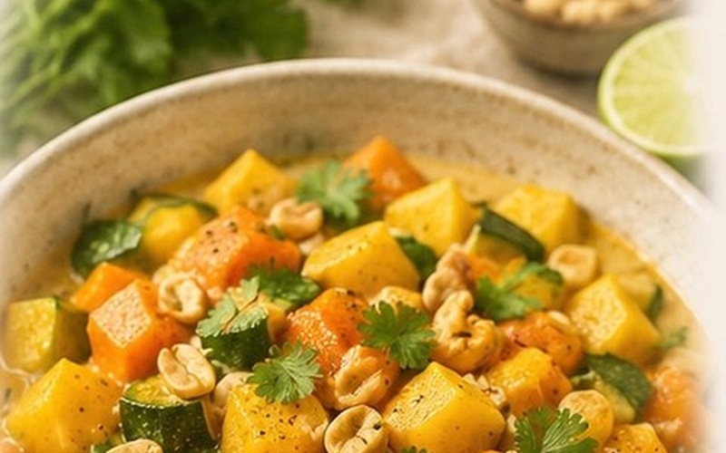
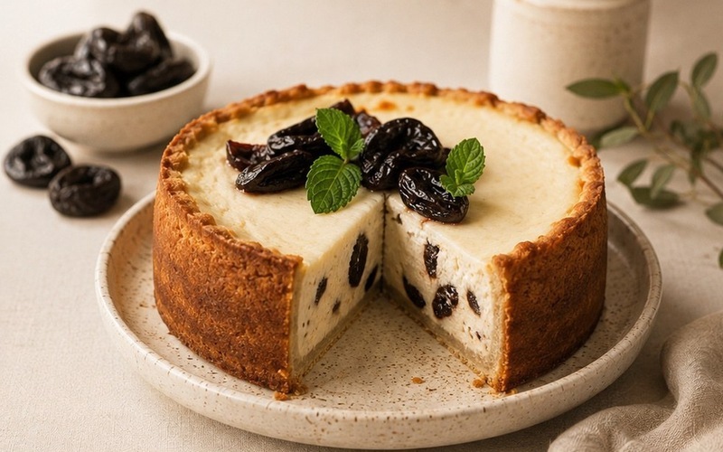
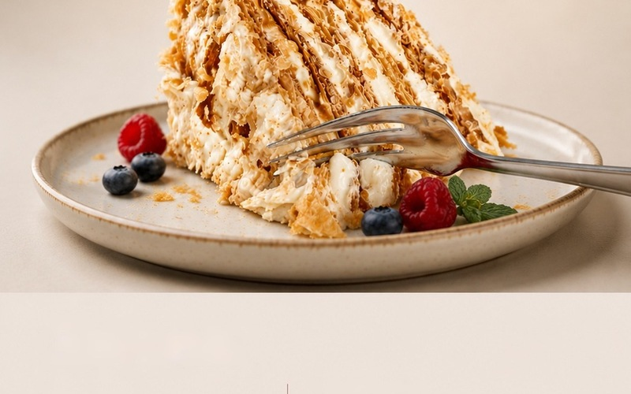

Избранные рецепты из 114 страниц книги
Все блюда сфотографированы и подробно расписаны: ингредиенты, специи, время и лечебные свойства.

Супы • Стр. 70Золотой суп Дал
Классический индийский суп из маша с куркумой, кумином и томлёным маслом гхи. Идеальный белок и чистая энергия.

Основные • Стр. 93Нежное Манго-Карри
Удивительный баланс сладкого манго, кокосовых сливок и пряных нот кориандра и имбиря. Настоящий ресторанный шедевр.

Десерты • Стр. 100Чизкейк с черносливом
Нежный творожный десерт без яиц и рафинированного сахара. Пряный чернослив и бархатистая текстура домашнего уюта.
 Супы • Стр. 73
Супы • Стр. 73
Крем-суп из свежей брокколи
Шелковистый изумрудный суп со сливками, мускатным орехом и хрустящими сухариками. Любимое блюдо для легкости в теле.
 Основные • Стр. 80
Основные • Стр. 80
Кутабы с зеленью и сыром
Тончайшее пресное тесто, горы свежей зелени, нежный домашний сыр и аппетитная корочка со сливочным маслом.

Десерты • Стр. 101Праздничный торт «Наполеон»
Воздушные хрустящие слоёные коржи и заварной саттвичный крем с натуральной стручковой ванилью без яиц.